Última semana del mes anterior
Reunión de estrategia
Con Santiago: resultados, prioridades y fechas relevantes del mes que empieza.

Propuesta para dar inicio, juntos, a formar equipo y hacer crecer lo que está bien hecho.
Acuerdo de servicio — Noviembre 2026
Lo que hacemos juntos, por escrito. El servicio mensual de estrategia y contenido para PoloMade: qué incluye, cómo trabajamos y qué necesita cada lado.
SC Consulting × PoloMadeAcuerdo de servicio · 2026
01 — El acuerdo
Esta página formaliza el servicio de estrategia y gestión de contenido que SC Consulting brinda a PoloMade durante noviembre de 2026: qué incluye, cómo circula el material, quién valida y qué queda fuera.
Es la referencia común para PoloMade y para el equipo que ejecuta la cuenta. Cuando aparezca una duda durante el mes, la respuesta debería estar acá.
02 — Qué incluye
La gestión integral de los canales de PoloMade, con cantidades claras. El contenido con foco en lo que mejor funciona: reels humanizados del campo, la gente y las obras.
Con foco en reels de contenido humanizado. El material base lo consigue el cliente y el equipo lo edita.
Cada posteo se replica en Facebook y TikTok, adaptado al canal.
Sobre la línea definida en el calendario, sin validación pieza por pieza.
Una por semana: contenido y banner, armada y enviada en Active Campaign.
Por mes, a partir de posteos ya publicados, para alimentar el sitio.
Piezas para portales como Agrofy y PoloHub, eventos o ads.
Mensual, con KPIs; más el seguimiento semanal de los leads de Meta y de mail.
Cuatro de seguimiento semanal y una mensual de estrategia con Santiago.
Las cantidades valen por mes calendario. El calendario es flexible: se ajusta ante novedades, oportunidades o resultados, siempre dentro de estas cantidades.
03 — Fee mensual
Pagadero al inicio del mes. Cubre todos los entregables, las reuniones y el seguimiento detallados en este acuerdo — sin costos ocultos.
04 — Dinámica de trabajo
Todo el contenido parte de un calendario mensual basado en la estrategia, y la semana tiene días fijos para cada cosa. Así el contenido sale según el plan, sin urgencias.
El pulso del mes
Última semana del mes anterior
Con Santiago: resultados, prioridades y fechas relevantes del mes que empieza.
A los 2 días hábiles
El equipo lo publica en Notion y el cliente lo valida en 48 horas hábiles.
Primera semana
Se analiza en la reunión de estrategia y ordena las prioridades siguientes.
La semana, paso a paso
Con la ejecutiva de cuentas y la diseñadora: avances, material pendiente y próximos contenidos.
El cliente envía el material, al menos 2 días hábiles antes de la validación.
El equipo envía las piezas de la semana siguiente.
El cliente devuelve sus comentarios en un solo mensaje y el equipo ajusta.
El contenido sale según calendario, sin urgencias.
Dónde vive todo
05 — Equipo
Tres roles claros y un solo punto de contacto por lado, para que el día a día sea simple.
Estrategia
Dirección estratégica de la cuenta. Lidera la reunión mensual: resultados, prioridades y rumbo.
Cuentas
Punto de contacto del día a día. Lleva la reunión semanal, el calendario y el seguimiento.
Producción
Un perfil asignado a la cuenta, con cobertura de todo el equipo ante ausencias.
06 — Condiciones
Lo que necesitamos de PoloMade
Acuerdos de trabajo
07 — Fuera de alcance
Cada uno de estos pedidos se presupuesta como proyecto, con alcance y fechas propios.
Siguiente paso
Si están de acuerdo con este alcance, lo confirmamos por mail o WhatsApp y arrancamos el 1 de noviembre. Cualquier ajuste, lo conversamos antes del inicio.